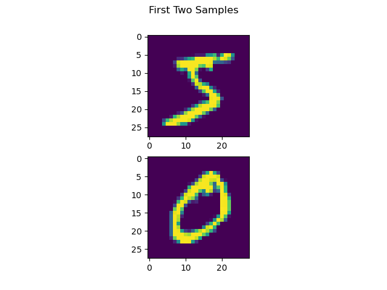
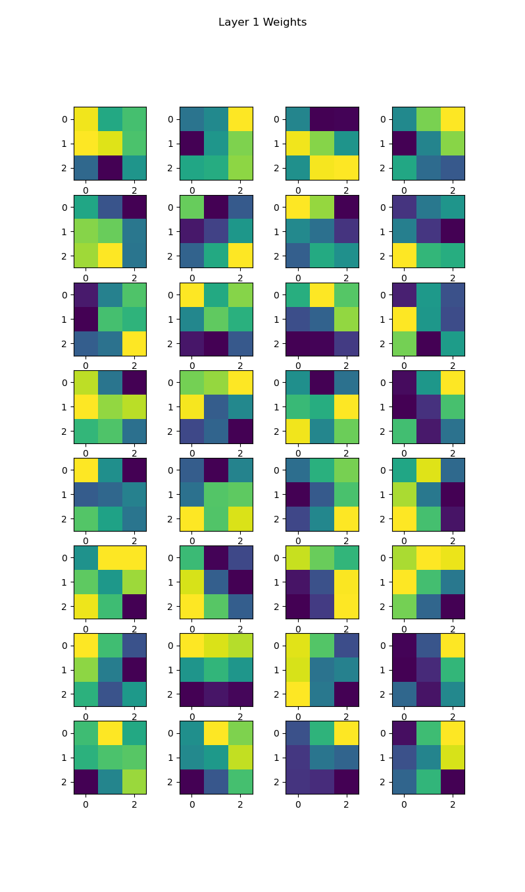
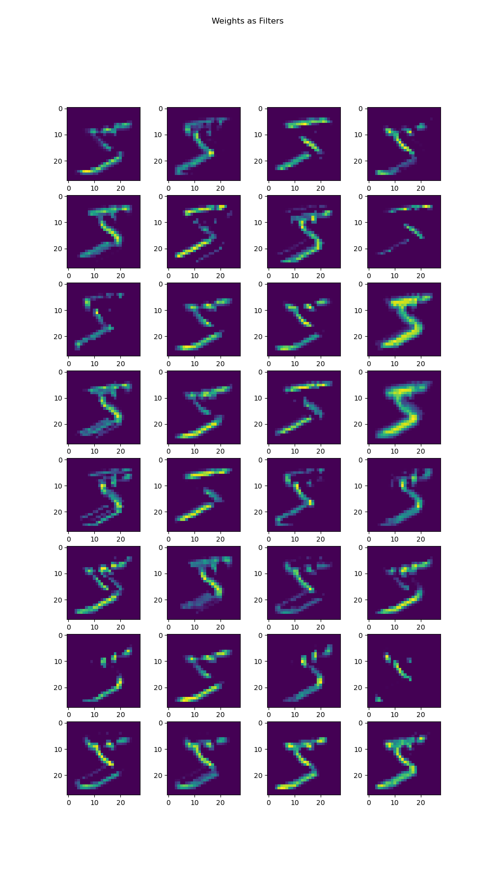
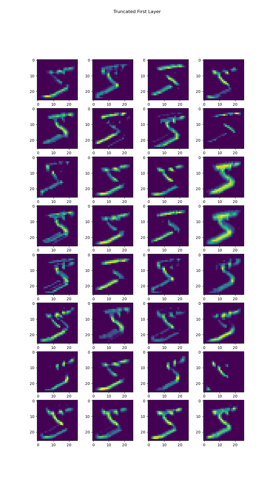
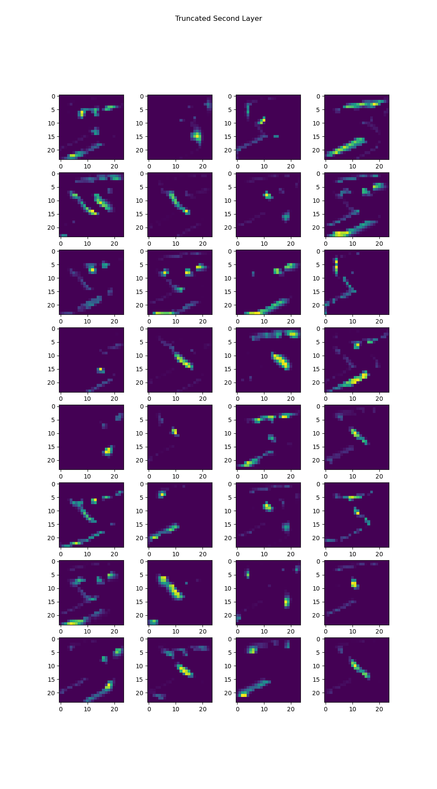

Greg Attra
CS 5330 Prof. Maxwell
This project uses deep neural networks to learn features in an image set and fit a model to those features. I explored fitting a multilayer convolutional neural network to the MNIST digit dataset, and used that trained model to produce an embedding space for an imageset of Greek letters. I also visualized the internals of the trained model, plotting the learned filters and their effect on the source image. Finally, I experimented with variations in the neural network architecture to fit a model to the MNIST fashion dataset, adjusting the number of convolutional layers, filter size and number of filters. This process was fully automated and implements each possible combination of the tweakable parameters.
For this part, I built the following Keras model, compiled it, and trained it to fit the MNIST number dataset:
m = keras.Sequential([
keras.Input(shape=input_shape),
layers.Conv2D(32, kernel_size=(3, 3), activation="relu"),
layers.Conv2D(32, kernel_size=(3, 3), activation="relu"),
layers.MaxPooling2D(pool_size=(2, 2)),
layers.Dropout(0.5),
layers.Flatten(),
layers.Dense(128, activation="relu"),
layers.Dropout(0.5),
layers.Dense(n_classes, activation="softmax")
])
Here are some example samples from the MNIST dataset:

The resulting accuracy:
When evaluating custom, handwritten samples, the model performed poorly:
Test loss: 1.1977448463439941
Test acc: 0.6000000238418579
This is likely due to a few things: 1. The handwritten digits are written using a slightly thinner lines; 2. The downsized images are more pixelated than the training data 3. The digits in the custom dataset are smaller in size than the original dataset
To get a better understanding of how the model processes data, I plot the learned filters of the first conv layer in the model.

When applying these filters using OpenCV’s filter2D function, the resuling images are as
follows:

Thinking on well known filters, such as the SobelX and SobelY filters, I think these results make sense given the weights of the filters. For example, the filter below closely resembles the horizontal Sobel filter.

When applied to the image, we see that the horizontal edges become more pronounced, which is the effect of the horizontal Sobel filter.

If we truncate the model after the first conv layer and compare the resulting images, we see virtually identical results:

Truncating one layer deeper, we get the following results:

Here we see similar features–vertical, horizontal, and angled edges–but with a spatital component factored in as well. Some filters look for edges in the top right or lower left. Others trace a subtle outline around parts of the number.
For this part, I use the pretrained model from the MNIST number dataset to create 128 dimensional embedding space for an imageset of the Greek letters alpha, beta and gamma. I then sampled one embedding for each class (alpha, beta, gamma) and computed the SSD between that embedding and all other embeddings. Below are the results:
While the SSD of the embeddings for the same letter were typically lower than those for embeddings of differing letters, I didn’t notice a distinct disparity between these distances. Using K-means clustering might be able to separate these embeddings, however, as certain features of the embedding space may be noticeably distinct between each letter.
I also made my own handdrawn dataset of these Greek symbols and again computed the SSD between these samples:
Here I noticed a clear difference in the SSD for samples of the same letter and those of different letters, more so than when using the dataset provided.
In this part, I selected five parameters along which I could modify the architecture of the
neural network used to fit the MNIST number dataset. I chose the following:
* Number of convolutional layers: 2, 3, 4
* Number of filters per convolutional layer: 34, 64, 128
* Size of filters per convolutional layer: 3, 5
* Number of dense layers: 2, 3, 4
* Number of units in each dense layer: 50, 100, 400
My hypothesis was that bigger filters would not have much of an impact on accuracy, but that an increased number of convolutional and dense layers, as well as a increase in teh number of units per dense layer, would yield better results and produce a more robust model. With more weights to train, more features may be learned. With the use of dropout, having more weights also increases the likelihood of redundancy without overriding other information that might be useful to the model.
As a baseline, I used the original architecture used for the MNIST number dataset:
Already the baseline does fairly well, nearing 90% accuracy.
I automated this process by compiling a list of all possible combinations of these parameters and iterating through that list, building a model with those configurations and training it for 10 epochs. I saved the history of each model into a list and plotted the accuracies of each.
From this graph, it appears that differing values for the number of convolutional layers, the number of filters, and the size of the filters did not have a clear positive or negative impact on the model. However, two dense layers consistently produced high accuracy, while three or four dense layers were inconsistent. And 400 dense units per layer consistently produced very high accuracy while fewer weights were inconsistent and noticeably less accurate.
I plotted the best model, as determined by its test accuracy, along with the corresponding configuration:
We see that the best model only had 3 convolutional layers, and the filter size was on the lower end with 3x3. Also, there were only 2 dense layers. But we see a high number of filters and a high number of dense units. If you consider that a single filter is functionally similar to a single dense unit, in that it is detecting a single feature, then a clear pattern emerges: more units produces higher accuracy and, with the use of dropout, greater robustness in the model.
While I was familiar with convolutional neural nets prior to the project, I had a much greater appreciation for what they are able to accomplish this time around, having built systems for texture analysis and feature detection using hardcoded algorithms. I have a newfound perspective and understanding of what filters are doing both in a mathematical and an intuitive sense. Knowing just how challenging an object recognition task is without the use of neural networks, using them feels like computer vision on easy mode. It’s amazing what they are capable of.
I also enjoy the idea of projecting objects into an embedding space, like with variational autoencoders. By projecting data into an embedding space of a common dimensionality with other embedding spaces for other data (i.e. an audio embedding space and an image embedding space), you can combine data from multiple formats and shapes into a common format and feed that combined sample through a standard neural network. This allows you to craft machine learning systems with multiple models of varying architectures at the top of the pipeline, producing encodings to be joined for a single model later down the line, instead of being restricted to a single model and data format.